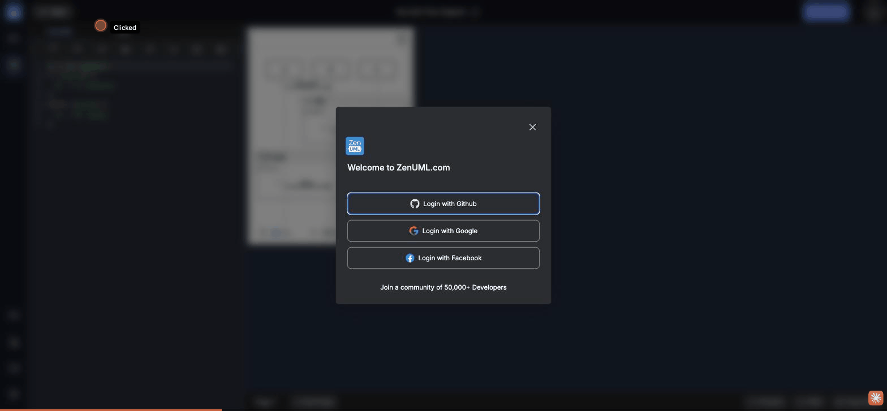

Auth gate discoverability · no preview · tab active state · feature lock transparency

Both the ZenUML tab and the CSS tab use identical visual styling: bg-black-800 font-semibold. The CSS tab carries no lock icon, no "Pro" or "Sign in" badge, no greyed-out state, no tooltip warning. A user has no pre-click information that the CSS tab requires authentication.
This violates the principle of transparent feature gating — when a feature requires upgrade or authentication, that requirement should be visible at the entry point, not revealed only after the user clicks. Showing the gate only at click-time is a dark pattern known as "bait and switch."
"CSS customization — sign in to unlock". Alternatively, allow unauthenticated users to view a read-only CSS editor prefilled with a default template, with a banner prompting sign-in to save.Clicking the CSS tab shows the same generic modal as Share Link, Export PNG, Copy PNG, and Present mode — all 5 show identical text: "Welcome to ZenUML.com / Login with Github / Login with Google / Login with Facebook / Join a community of 50,000+ Developers." The modal contains:
• No mention of CSS customization — what does it unlock?
• No preview or screenshot of what CSS styling looks like
• No indication of tier — is it free with login, or paid?
• No "Learn more" link for users who want to understand before committing
The 5-feature pattern of identical auth gates means that by the 3rd or 4th encounter, users disengage completely — they no longer read the modal and simply dismiss it. The modal provides no conversion value for the CSS feature specifically.
When unauthenticated, the CSS tab's editor container is completely absent from the DOM — confirmed via document.querySelector('[class*="css-editor"]') returning null and zero CSS-related divs rendered. There is no placeholder, empty state, or teaser of what the editor would contain.
In contrast, tools like Mermaid Live Editor, draw.io, and CodePen show the full editor interface to all users but restrict saving/sharing behind auth. This "try before you sign up" approach drives significantly higher conversion because users can experience the value before being asked to commit.
.participant { background: #e8f4fd; }). Allow free editing but block saving with an inline "Sign in to save your changes" banner. This lets users experience the feature's value before signing up.The active tab (ZenUML) is differentiated from the inactive tab (CSS) by only: a border-b border-primary (2px bottom border in blue) and a minor background shift from bg-black-800 to bg-black-500. At normal viewing distance, the active state is not immediately obvious — the text color change to text-primary-400 (blue-ish) is subtle against the dark background.
Modern tab implementations (Chrome DevTools, VS Code, Figma panels) use a clear background color contrast, not just a border underline, to communicate active state. The current implementation passes a quick glance test only because there are two tabs — with 3+ tabs the active tab would be much harder to spot.
bg-zinc-700) with a rounded top-corners treatment, or switch to a pill/chip active-tab style with a full background fill. The border-b alone is the weakest form of tab indicator in dark UIs.Even if a user successfully authenticates to access the CSS editor, there is no in-app documentation about:
• What CSS selectors target which diagram elements (e.g., .participant, .message-label)
• Which CSS properties are supported (SVG CSS vs HTML CSS)
• Example CSS snippets for common customizations (brand colors, font changes)
• A link to external documentation or a "CSS Reference" panel
The Language Guide sidebar panel exists for ZenUML syntax, but there is no equivalent guide for the CSS editor. A power user discovering CSS customization must reverse-engineer the SVG structure by hand.
.participant { }, .message { }, .divider { }, etc. A single-page CSS cookbook linked from the editor would dramatically improve discoverability.